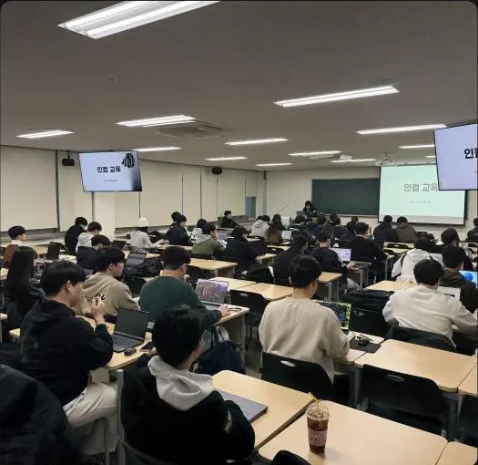
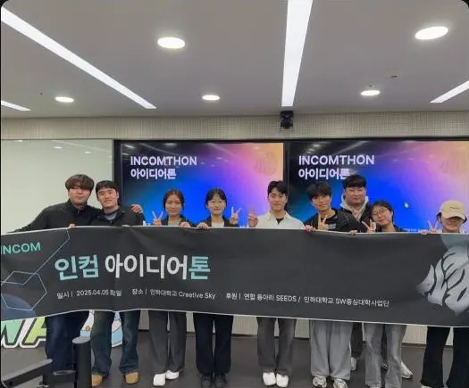
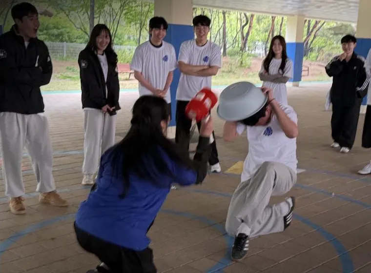
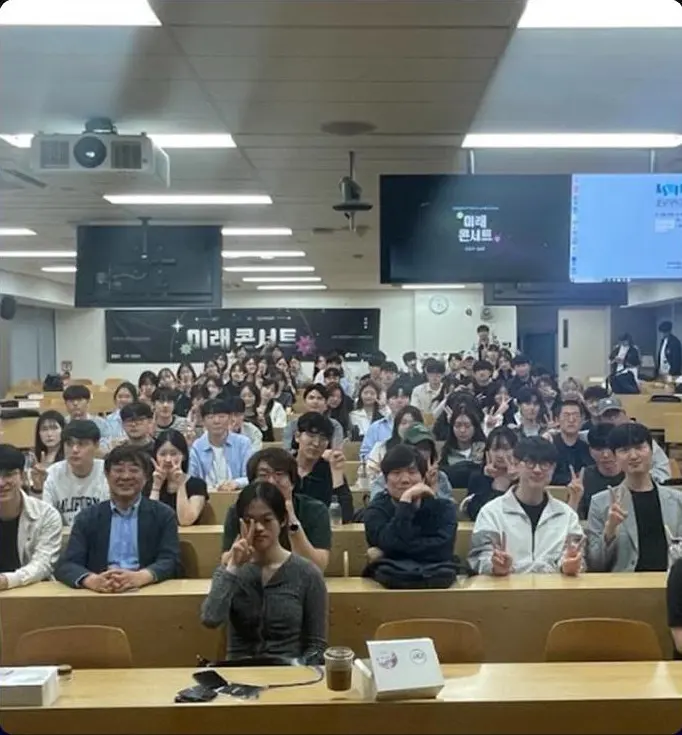

INCOM
INHA UNIVERSITY COMPUTER CLUB
EST. 1981 — STILL CURIOUS.CURIOUS
BY NATURE.
FIG. 01
THE CONNECTION
∞ IDEAS
ONE COMMUNITY
컴퓨터를 좋아하는 마음이
새로운 세계의 시작이 되도록.
DRAG TO EXPLORE ↔
INCOM, SINCE 1981호기심으로 만나, 가능성으로 연결되다.
↓
01 / THE COLLECTIVEDIFFERENT MINDS. SHARED CURIOSITY.
FIG. 01 / OUR IDENTITYINCOM / EST. 1981
INHA UNIVERSITY COMPUTER CLUB↗
EST. 1981
CLUB ARCHIVE
안녕, 우리는 INCOM.
혼자 품은 호기심이
함께 만드는
가능성이 되는 곳.
컴퓨터를 좋아하는 마음. 그것 하나로 충분합니다.
INCOM은 1981년 11월 5일 시작된 인하대학교 컴퓨터 연구분과 중앙동아리입니다. 컴퓨터에 관한 연구와 개발, 지식의 나눔을 바탕으로 함께 성장하는 커뮤니티를 만들어갑니다.
전국 대학 컴퓨터 동아리 연합 UNICOSA와 교류하며, 전공과 경험에 관계없이 교육·스터디·프로젝트·친목 활동을 함께합니다.
01 / COMMUNITY같이, 더 멀리.
함께 탐구하고 서로의 성장을 돕는 컴퓨터 동아리
02 / SHARING배움은 나눌수록.
배운 지식과 경험을 나누며 더 넓게 성장하는 문화
03 / DIVERSITY다름이 모이는 곳.
전공과 경험에 관계없이 다양한 관심사가 만나는 곳
INCOMINCOMINCOMINCOMINCOMINCOMINCOMINCOMINCOMINCOMINCOMINCOMINCOMINCOMINCOMINCOM
02 — LIFE AT INCOM2026 / 47TH GENERATION
좋아하는 것에
진심인 우리.
배우고, 만들고, 연결하며 함께 성장합니다.
47기 신입부원과 함께 만들어갈
2026년 INCOM의 네 가지 활동 축.
↙

01LEARN
INCOM / 01처음의 막막함을,
함께의 자신감으로.
정기교육과 참여자 중심 스터디로 함께 성장합니다.
- Python 정기교육
- 선형대수·바이브코딩·C++
- ML/DL·공업수학·백준 스터디

02BUILD
INCOM / 02상상에서 멈추지
않는 사람들.
아이디어 구상부터 구현까지 전 과정을 직접 경험합니다.
- 단계형 자체 해커톤
- 기획·개발 멘토링
- 컴퓨터 동아리 연합 도전

03CONNECT
INCOM / 03코드 너머,
사람과 사람 사이.
환영회, MT, 체육대회에서 오래 기억할 관계를 만듭니다.
- 신입생 환영회
- 친해지길 바라
- MT·체육대회·정기 교류

04EXPAND
INCOM / 04우리의 바깥으로.
가능성의 다음으로.
연합 활동과 세미나, 기업 탐방으로 시야를 넓힙니다.
- UNICOSA 연합 활동
- 초청 세미나
- 기업 탐방과 동아리 교류
03 — OUR ORIGINA HISTORY OF CONNECTION.
오래된 시작.
늘 새로운 우리.
INCOM.SYS / 1981 — NOW
1981.11.05호기심의 시작
인하대학교 컴퓨터 연구분과 중앙동아리 INCOM이 시작되었습니다.
1983함께할 이유를 세우다
회칙을 제정하고, 연구·개발·보급과 회원 간 친목이라는 동아리의 목적을 세웠습니다.
NOW연결은 계속된다
1981년부터 이어진 연결. 교육, 스터디, 프로젝트와 교류 활동을 이어가는 컴퓨터 동아리입니다.
SCROLL THROUGH OUR HISTORY ↓01 / 03
04 — SELECTED RESULTSPROVEN BY DOING
우리의 몰입이
남긴 것들.
배움은 결과로 이어집니다.
- 01
AI 융합 데이터 해커톤
우수상
- 2025
인하 넥스트 캠퍼스 챌린지
우수상
- 2025
ILOAD 글로벌 해커톤
최우수상
- 2025
SW중심대학 디지털 경진대회 AI부문
대상